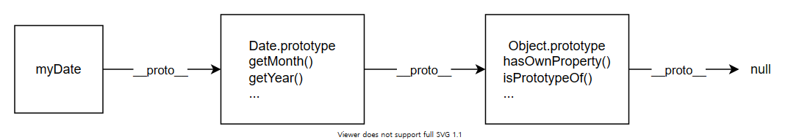
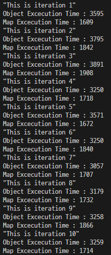
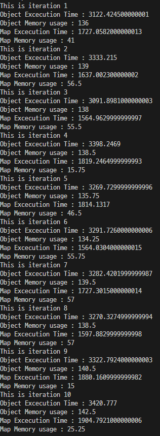
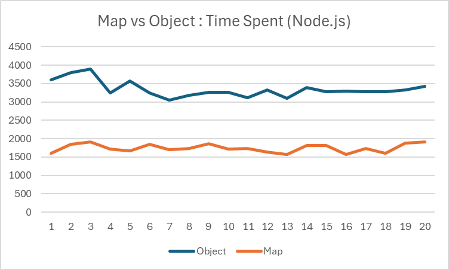
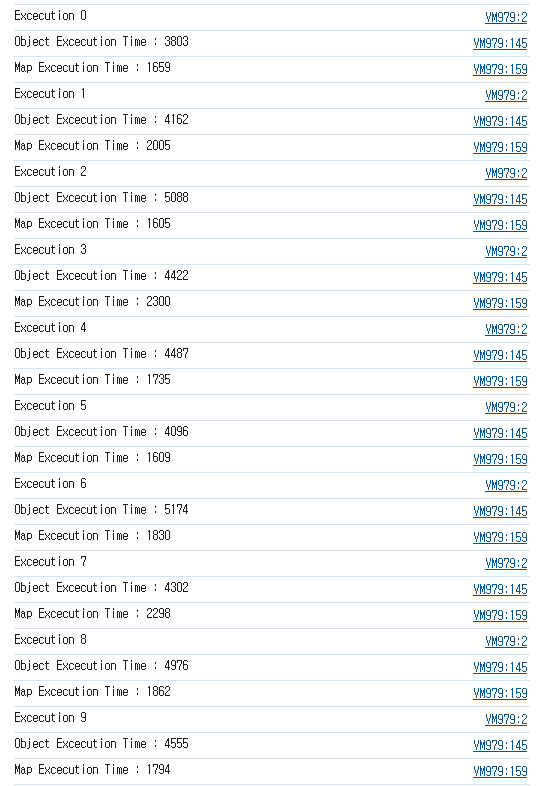
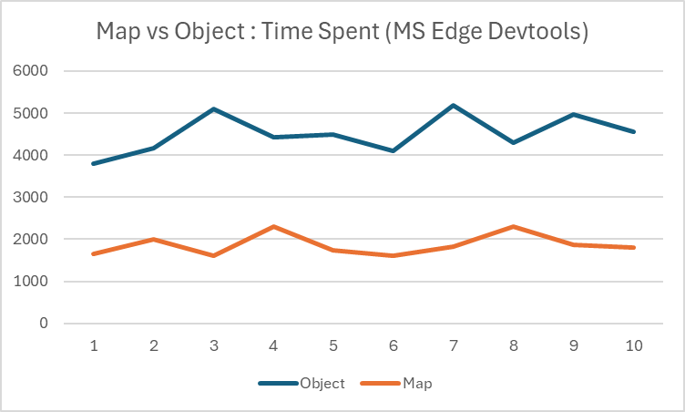
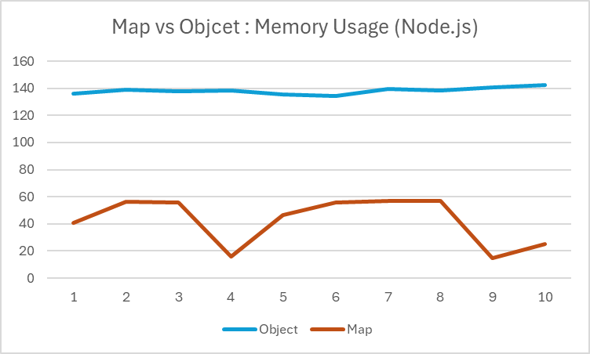

[Javascript] Map과 Object, 뭘 써야 할까?
서론
최근 한 기업의 코딩 테스트를 푸는데, 중첩된 구조의 객체를 필요로 하는 문제를 맞닥들이게 되었다.
나는 ‘Object가 Map보다 있는 기능이 별로 없으니까, 혹시 몰라서 메모리 터질 수 있는 Map 보단 Object가 낫지 않을까?’ 라는 생각으로 Object를 활용해 해당 문제를 풀었다.
그리고 그 이후 내 생각이 맞을까? 라는 생각을 갖게 되었고 이를 직접 테스트 한 뒤 내용을 정리해보고 싶어졌다.
따라서 여러 글을 찾아 보았고, 직접 문제와 유사한 상황을 가정하고 코드를 작성해 시간과 메모리 사용량을 측정해보았다.
TL;DR
Map은 ES6 명세에 따라 선형시간 이하의 접근 시간을 제공해야 한다.V8과 같은 대부분의 JS 엔진에서는HashTable을 활용해 빠른 삽입/접근 시간을 제공한다.- 테스트 결과, 다른 벤치마크들 처럼
Map이Object보다 30~50% 정도 빠른 속도를 보였다.
Map vs Object
자바스크립트에서 Map과 Object 모두 키-값 쌍으로 데이터를 저장하는 것은 동일하지만, 세부적으로는 다른점들이 존재합니다.
Map
Javascript 2015(ES6)에서 처음으로 등장했습니다.- Map은
원시 타입,객체,함수등 어떤 데이터 타입이든 키로 지정할 수 있습니다. - 맵의
키는 삽입된 순서대로 순서를 유지합니다. - Map은 원소들을
반복(Iteration)하는데 사용하는forEach,keys,values,entries와 같은빌트인 메서드들을 갖고 있습니다. - 원소에 접근하기 위해
set(),get()와 같은 메서드를 사용해야 합니다.
Object
- Object의
키는문자열이거나기호여야 합니다.- 만약 다른 자료형을 사용할 경우,
자동적으로문자열로 변경됩니다.- 즉,
키가 동일한지 검사할 때느슨한 동등 비교(==)를 통해 값만 비교합니다.- 이와 달리 Map은
엄격한 동등 비교(===)를 사용합니다.
- 이와 달리 Map은
- 즉,
- 만약 다른 자료형을 사용할 경우,
- Object의 속성들은
순서를 보장하지 않습니다.- 대부분의 JS 엔진들이 삽입된 순서를 유지하려고 하지만, 이는 엔진에서 처리해주는것이지 언어 자체에서 규정된 사항이 아닙니다.
- Object는
prototype chain이 있어, 프로토타입 객체들로부터 속성과 메서드를 상속받습니다.프로토타입 체인(prototype chain): 모든 객체에는프로토타입이라는 다른 객체에 대한 링크가 존재하며, 해당 프로토타입 또한 자체 프로토타입을 가지는데 이러한 연결이 null을 프로토타입으로 하는 객체를 만날 때 까지 계속되는 형태를 뜻합니다. 
- Object의 원소를
반복하려면,Object.keys(obj)를 통해 키 배열을 추출하거나,for in문을 사용해야 합니다. - Object는 원소에 접근하기 위해
대괄호 표현식또는.을 사용해 직접 접근합니다.
성능은 어떨까?
온라인에 올라온 대부분의 Map vs Object 성능 벤치마크에서는 Map이 삽입, 삭제, 갱신 등의 작업에서 성능 우위를 보이고 있었습니다.
Map이 성능우위임을 보여주는 벤치마크
zhenghao라는 유저의 벤치마크(When You Should Prefer Map Over Object In JavaScript (zhenghao.io)), MeasureThat의 벤치마크(Benchmark: Map vs Object (real-world) Performance - MeasureThat.net) 등 데이터를 살펴보면 삽입/값 가져오기 연산시 27~50% 가량 Map이 더 빠르다는 결과가 나왔음을 알 수 있습니다.
- 이 테스트들은 Map이 중첩되지 않은, 깊이가 1인 평면상에서 이뤄진 테스트입니다.
- 추가로 메모리 역시 Map이 더 적게 차지한다는 결과가 많았습니다.
왜?
ES6 명세에 따르면, Map 객체는 HashTable, 또는 다른 메커니즘을 활용해 컬렉션 요소 수에 대해 선형 이하의 접근 시간을 제공할 수 있어야 합니다.
Map object must be implemented using either hash tables or other mechanisms that, on average, provide access times that are sublinear on the number of elements in the collection. The data structures used in this Map objects specification is only intended to describe the required observable semantics of Map objects. It is not intended to be a viable implementation model.
이러한 명세를 지키기 위해, 다양한 JS 엔진에서 HashTable을 활용해 Map 객체를 구현하고 있습니다.
- V8(Google) - v8/src/objects/map.cc at master · v8/v8 (github.com)
- SpiderMonkey(Mozilla) - MapObject.cpp - mozsearch (searchfox.org)
오늘은 세계에서 가장 많이 사용되는 Chromium 기반의 환경을 가정하고 성능을 비교해보기 위해, V8 엔진의 Map에 대해 알아보겠습니다.
Map in V8 Engine
V8 엔진에서 Map은 HashTable, 정확히는 OrderedHashTable 이라는 삽입된 순서를 유지하는 HashTable을 사용합니다.
이는 Deterministic hash table라는 자료구조를 기반으로 합니다.
Deterministic hash table
// pseudocode of Deterministic hash table
struct Entry {
Key key;
Value value;
Entry *chain;
}
class CloseTable {
Entry*[] hashTable; // array of pointers into the data table
Entry[] dataTable;
}
기존의 버킷/체인 해시 테이블과 조회/삽입은 비슷하게 진행되지만, 각 Entry들이 Heap에 별도로 할당되지 않고 삽입 순서대로 dateTable에 저장되게 됩니다. (hashTable의 각 요소들은 버킷인 dataTable을 가리킴)
따라서 hashTable에서 삽입된 순서를 유지할 수 있습니다.
V8 엔진에서 HashTable을 사용하므로, set을 통한 삽입과 get을 통한 탐색에 $O(1)$ 의 시간이 걸릴것으로 유추할 수 있습니다.
직접 확인 해보자
앞서 살펴본 테스트들 결과에 따르면, Map이 시간적으로나 공간적으로나 Object에 우위를 보이고 있음을 알 수 있습니다.
그래도 한 번 제 케이스에 맞게 직접 실험해보고 싶었고, Nested한 구조에서도 우위일지 알아보고 싶어졌습니다.
테스트 진행 방식
- 테스트에 사용할 명령어 set을 먼저 만듭니다.
- 1,000,000개의 명령어 배열을 만들고, 500,000개의 삽입 명령과 500,000개의 삭제 명령을 만들어 채웁니다. 각 명령은 다음과 같은 형태를 가집니다.
- 주어지는 경로는
.으로 구분되며, 경로를 이루는 문자열들은 key 또는 property의 이름에 해당합니다.- ex)
abc.def.fgi라면,root.get('abc').get('def').get('fgi')를 통해 접근할 수 있습니다. - 편의상 주어지는 경로는 모두 절대경로입니다.
- ex)
[삽입, "경로"]- 경로의 마지막 문자열을 제외한 위치까지 이동한 후, 마지막 문자열의 이름으로 새 Map(또는 Object)을 생성합니다.
- 올바르지 않은 경로인 경우 생성하지 않습니다.
- 경로의 마지막 문자열을 제외한 위치까지 이동한 후, 마지막 문자열의 이름으로 새 Map(또는 Object)을 생성합니다.
[삭제, "경로"]- 경로의 마지막 문자열을 제외한 위치까지 이동한 후, 마지막 문자열의 이름에 해당하는 Map(또는 Object)을 삭제합니다.
- 올바르지 않은 경로인 경우 삭제하지 않습니다.
- 경로의 마지막 문자열을 제외한 위치까지 이동한 후, 마지막 문자열의 이름에 해당하는 Map(또는 Object)을 삭제합니다.
- 주어지는 경로는
- 1,000,000개의 명령어 배열을 만들고, 500,000개의 삽입 명령과 500,000개의 삭제 명령을 만들어 채웁니다. 각 명령은 다음과 같은 형태를 가집니다.
- Map으로 먼저 해당 명령들을 수행하고, 시간을 기록합니다.
- Object로 해당 명령들을 동일하게 수행하고, 시간을 기록합니다. 테스트에 사용된 코드는 아래와 같습니다.
테스트 결과
테스트는 Node.js를 통해 2 * 10회, MS Edge의 DevTools에 있는 Console에서 1 * 10회 진행되었습니다.
Time Spent in Node.js
|  |  |
|---|

앞서 찾아보았던 벤치마크들의 데이터처럼 3~50% 정도의 시간 차이가 발생한 것을 알 수 있었습니다.
Time Spent in MS Edge Devtools
  MS Edge의 Devtools의 Console에서 진행한 테스트 역시 50%가량의 차이를 보이고 있음을 알 수 있었습니다.
추가) Memory Usage in Node.js

아무래도 제가 Object를 선택했었던 이유가 메모리 사용량에 대한 우려였기 때문에, 실제로 둘 간의 메모리 사용량 차이가 어느정도 나는지도 파악하고자 했습니다.
하지만, performance를 통해 브라우저에서 측정하는 것은 정확한 데이터가 나오지 않았습니다.
(--enable-precise-memory-info 플래그를 켜고 실행하라는 조언대로 했는데도 불구하고 말이죠)
performance.memory의usedJSHeapSize변화량을 추적하고자 했으나, 보안상 이슈?로 정확한 값을 브라우저에서 제공하지 않았습니다. (추가로, MDN의 API 문서에 따르면Deprecated된 기능이라고 합니다.)- 따라서
performance.measureUserAgentSpecificMemory()나, Toast UI 팀 블로그의 글을 읽고performance.measureMemory()같은 다른 API를 사용하고자 했으나,Experimental기능이기 때문인지 사용할 수가 없었습니다.
그래서 Node.js에서라도 메모리 사용량을 측정해보고자 했습니다.
찾아보니, Node.js에서는 --expose-gc 플래그를 이용해 사용자가 명시적으로 gc를 호출하므로써 자동으로 gc가 발생하는 텀을 늘려, 잦은 gc 발생 없이 테스트하는 시간동안의 메모리 변동을 측정할 수 있다고 하여 해당 방법을 사용했습니다.
그러나 Map을 테스트할 때 메모리 사용량 값이 튀는 경우가 발생해, 측정한 데이터도 그냥 ‘아 메모리 사용량도 Map이 훨씬 적구나’ 정도를 짐작 하는 용도로만 사용할 수 있을것 같습니다.
결론
Javascript에서 key를 통해 탐색해야하는 Dictionary 형태의 구조체(중첩된 형태의 구조더라도)를 사용해야 한다면, 웬만하면 Map을 쓰는 것이 좋다!
- 추가로, V8 엔진에서 사용하는
hashTable의 구조라던지, V8 소스 코드를 찾아보는 등의 경험을 할 수 있어서 새로웠다! - 나중엔 이런 소스 코드들을 전부 이해하고 나아가 Contribute 할 수 있는 개발자가 될 수 있도록 노력해야겠다!
참고
- ECMAScript 2015 Language Specification – ECMA-262 6th Edition (ecma-international.org)
- [V8 Deep Dives] Understanding Map Internals | by Andrey Pechkurov | ITNEXT
- Issue 220293002: OrderedHashTable implementation with Set and Map interfaces - Code Review (chromium.org)
- Issue 947683002: Reimplement Maps and Sets in JS - Code Review (chromium.org)
- Map vs Object in JavaScript - GeeksforGeeks
- 키 기반 컬렉션 - JavaScript | MDN (mozilla.org)
- Javascript Objects vs Map performance (Chrome, V8, Node JS) - Stack Overflow
- Monitoring JavaScript Memory - TrackJS
- Performance: measureUserAgentSpecificMemory() method - Web APIs | MDN (mozilla.org)
- Performance: memory property - Web APIs | MDN (mozilla.org)
- performance.measureMemory()로 웹 페이지 전체 메모리 사용량 모니터링하기 | TOAST UI :: Make Your Web Delicious!